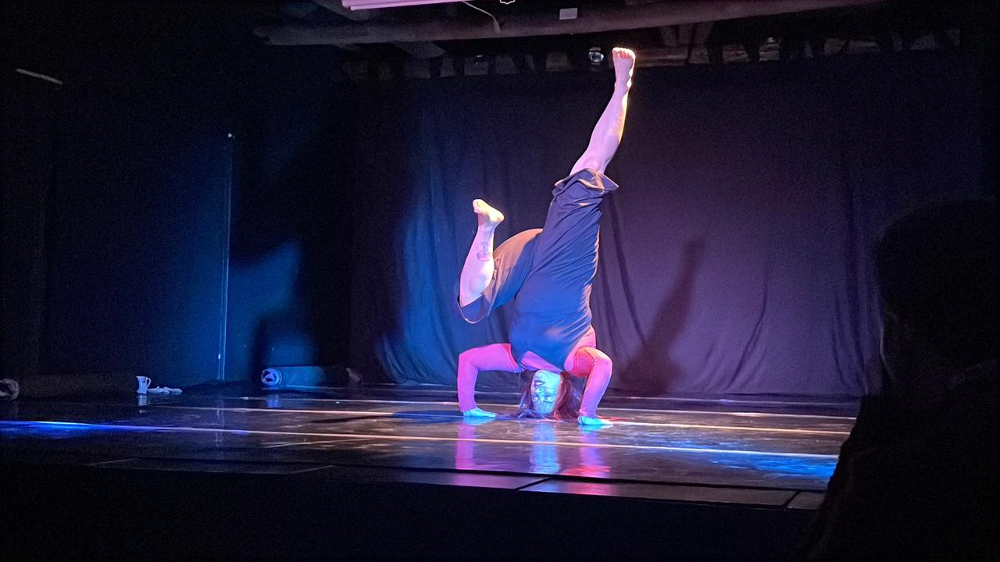
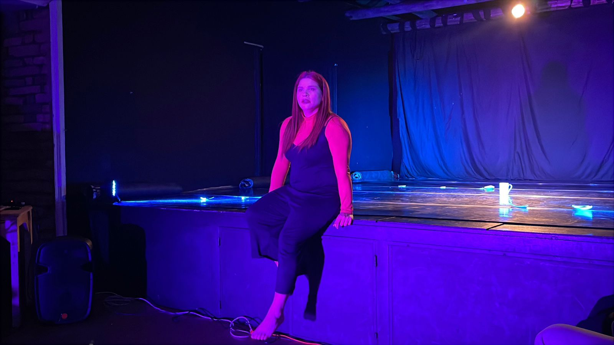
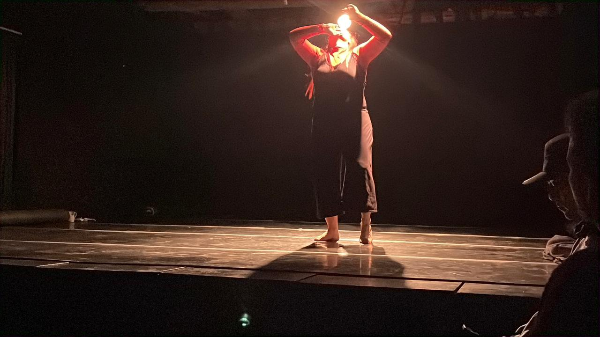
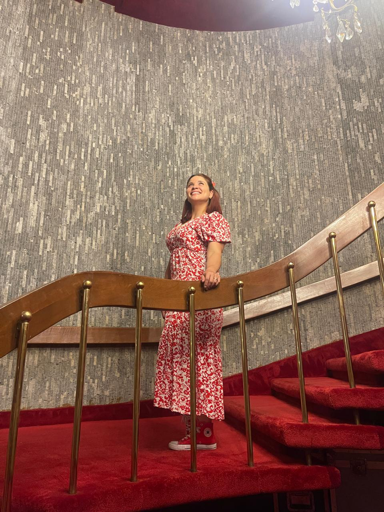
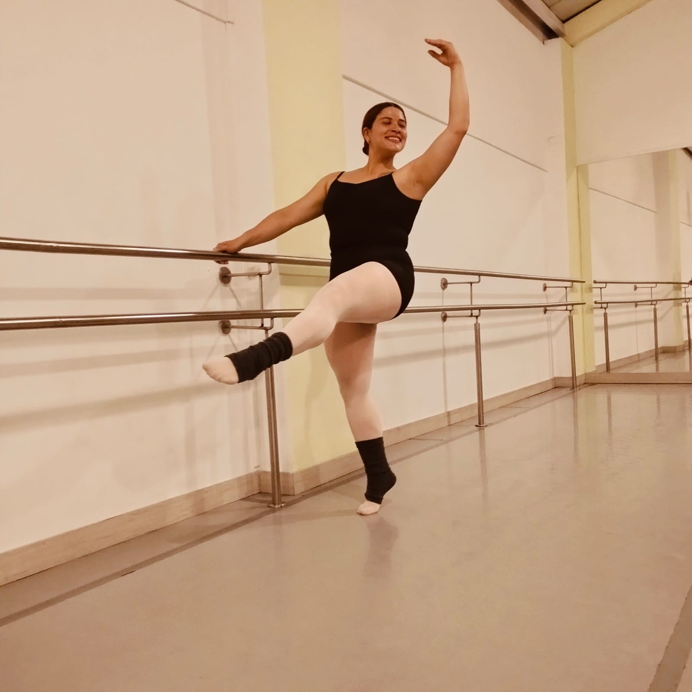

Galería






Sthepany de la Hoz es maestra en danza y directora coreográfica con formación en ballet clásico y danza contemporánea. Fundadora de Parakletos Dancing, su enfoque principal es la pedagogía y la dirección artística como herramientas de transformación espiritual y social.
Como creadora y académica, ha explorado la conexión entre la vida y la espiritualidad a través de obras como su solo "Frágil, un amor que se entrega", y desde la investigación con su monografía de grado escrita en formato de cuento autoetnográfico.
Más allá de la academia, Sthepany trabaja con la Fundación Nueva Vida enseñando danza a mujeres en proceso de restauración tras salir de la prostitución. A través del movimiento comparte un mensaje de esperanza y restauración.
"Frágil: Un amor que se entrega" es un emotivo cuento-bitácora autobiográfico que entrelaza la fe cristiana, la maternidad y el arte del movimiento.
La obra explora el Amor Ágape y cómo este transforma el dolor humano, inspirándose en el Kintsugi japonés —el arte de reparar cerámica rota con oro— y en la imagen bíblica del Alfarero que moldea el barro.
A través de su proceso creativo, Sthepany aprende a transformar la adversidad en un poderoso solo íntimo que conecta con el espectador desde la vulnerabilidad, el perdón y la restauración espiritual.
Labor Social y Docencia
Dirección y Creación Coreográfica
Investigación




Para contrataciones, colaboraciones o proyectos artísticos.